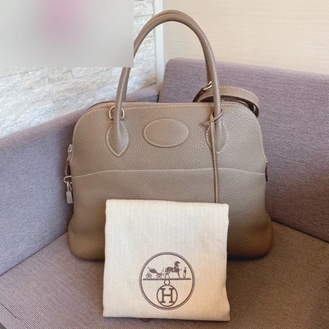

ブランド品を売る前に知っておきたい3つのこと
初めてブランド品を売る方がつまずきやすいのは、「本人確認書類を持っていなかった」「付属品を家に置いてきた」「どの査定方法を選べばよいかわからない」の3点です。この記事では、当社の2店舗（〇〇〇〇A 心斎橋店・〇〇〇〇B）で査定を担当するスタッフが、この3点を中心に、売る前の準備から代金を受け取るまでの流れをご説明します。
記事中の法令の説明は、所管官庁と法令データベースの一次情報を確認したうえで記載しています。当店で受け付けている書類の種類など具体的な運用は、ご来店前に各店舗へお問い合わせください。
なぜ本人確認が必要なのか？（古物営業法）
ブランド買取店は、古物営業法にもとづく「古物商」の許可を受けて営業しています。古物営業法では、古物商が品物を買い受ける際に、相手方の住所・氏名・職業・年齢を確認することが義務づけられています（古物営業法第15条）。盗品の流通を防ぎ、万一盗品が見つかった場合に被害回復につなげるための仕組みです。
法令上、対価の総額が1万円未満の取引では確認が不要とされる例外がありますが、ゲームソフトや書籍など一部の品目は金額にかかわらず確認が必要です。また、ブランド品の多くは1万円以上の取引になるうえ、店舗の方針として金額にかかわらず本人確認を行う場合が一般的です。
ポイント
古物商の許可は各都道府県の公安委員会が出しています。店舗のサイトや店頭に「古物商許可 第○○号（○○県公安委員会）」の表示があるかを確認すると、許可を受けた店舗かどうかを判断する手がかりになります。制度の概要は警察庁のサイトで確認できます。
必要書類は何を持っていけばいい？
本人確認書類は、氏名・住所・生年月日が確認できる公的な書類が基本です。来店時は原本を持参してください。
| 書類 | 注意点 |
|---|---|
| 運転免許証 | 有効期限内のもの。住所変更をしている場合は裏面の記載も確認されます |
| マイナンバーカード | 確認に使うのは表面のみです。個人番号（裏面）は控えられません |
| パスポート | 住所の記載欄がないものは、住所を確認できる書類の追加提示を求められる場合があります |
| 在留カード等 | 有効期限内のもの |
| その他の書類 | 当店で受け付ける書類の種類は【要確認】 |
宅配買取など対面しない取引では、本人確認書類の写しの送付に加えて、法令で定められた方法（本人限定受取郵便の利用など）で確認が行われます。当店での具体的な手順は【要確認】です。
付属品は査定にどう影響する？
ブランド品の査定では、本体の状態に加えて付属品の有無も確認します。当社では付属品の状態を「完品」「一部欠品」「本体のみ」の3区分で整理しています（定義は相場データと編集方針を参照）。
| 品目 | 主な付属品 |
|---|---|
| バッグ（エルメス・シャネル等） | 箱、保存袋、ギャランティカード、鍵・カデナ、レインカバー、購入時のレシート |
| 時計（ロレックス等） | 箱、保証書（ギャランティカード）、余りコマ、取扱説明書、タグ |
| ジュエリー（カルティエ等） | 箱、保証書、鑑定書・鑑別書、専用ドライバー（ラブブレス等） |
| シルバー（クロムハーツ等） | 購入時のレシート・インボイス、保存袋 |
付属品がない場合でも買取の対象になることは多いため、見つからないからといって売るのをあきらめる必要はありません。見つかった付属品だけでも一緒に持参しましょう。品目ごとの詳細は時計、ジュエリー、シルバーの各ページで解説しています。

査定から入金までの流れ
当店での店頭買取の流れです。宅配・LINE査定の場合も、査定の中身は大きく変わりません。査定料・手数料は無料で、査定のみのご来店も歓迎しています。
- 受付売りたい品物と本人確認書類を提示します。
- 査定ブランド・型番・状態・付属品を確認し、真贋を見極めます。品物の数や種類によって時間は変わります。
- 査定額の提示査定額と、その根拠（状態・付属品・査定時点の相場など）をご説明します。ご納得いただけなければ、売らずにお持ち帰りいただけます。
- 契約・本人確認売却に同意したら、本人確認と書類への記入を行います。
- 代金の受け取り〇〇〇〇Bではその場で現金でお支払いします。〇〇〇〇A 心斎橋店の支払方法は【要確認】です。

店頭・宅配・LINE査定はどう違う？
| 項目 | 店頭買取 | 宅配買取 | LINE査定 |
|---|---|---|---|
| 査定の方法 | 店舗で実物を見て査定 | 品物を送り、店舗で実物を査定 | 写真とメッセージで概算を確認 |
| 本人確認 | 書類の原本を店頭で提示 | 書類の写しの送付など法令に沿った方法 | 売却時に店頭・宅配いずれかの方法で実施 |
| 代金の受け取り | その場で受け取れることが多い | 査定・承諾後に振込が一般的 | 概算のみ。売却は店頭か宅配で |
| 向いている人 | すぐに現金化したい、説明を直接聞きたい | 店舗に行く時間がない、遠方に住んでいる | 売るか迷っている、目安だけ知りたい |
| 注意点 | 営業時間を事前に確認 | 梱包・配送中の破損に注意 | 実物確認で金額が変わる場合がある |
当社の〇〇〇〇A 心斎橋店と〇〇〇〇Bは、どちらも店頭・宅配・LINE査定に対応しています。2店舗の使い分けは〇〇〇〇Aと〇〇〇〇Bの選び方をご覧ください。
ブランドバッグの査定は当店へ（電話・LINEで無料相談）
どちらの店舗でも査定・ご相談を承ります。2店舗の違いと選び方
未成年でもブランド品を売れる？
2022年4月から成年年齢は18歳になりました。18歳未満の未成年者が親権者などの法定代理人の同意なく結んだ売買契約は、原則として取り消すことができます（民法第5条）。そのため、買取店では18歳未満の方からの買取を受け付けない、または保護者の同意書や同伴を求めるのが一般的です。
また、都道府県の青少年健全育成条例で古物の買受けに関する規定が設けられている場合があります。大阪府での具体的な扱いと、当店の受付条件は【要確認】です。18歳・19歳の方も、店舗によって追加の確認を求められることがあります。
注意
保護者の同意書の書式や、同伴が必要かどうかは、ご来店前に必ず当店へお問い合わせください。
相場を調べてから売るには
査定額の目安を知りたい場合は、相場トラッカーで当社の過去の買取実績をご確認いただけます。相場は状態・付属品・時期によって変動するため、あくまで目安としてご覧ください。代表的な相場ページはエルメス バーキン30、シャネル マトラッセ25、カルティエ ラブブレスなどです。
売るか、手元に残したままお金を用意するか迷っている場合は、質入れと買取の違いも参考にしてください。夜遅くに売りたい場合は深夜に売る方法で注意点をまとめています。
よくある質問
本人確認書類のコピーでも売れますか？
店頭では原本の提示が基本です。宅配買取では書類の写しを送付する方法がありますが、法令で定められた追加の確認が行われます。
家族の代わりに品物を売ることはできますか？
本人確認は実際に売る方に対して行われます。家族名義の品物を代理で売る場合の当店での扱いは【要確認】です。事前に店舗へお問い合わせください。
査定額に納得できなかった場合はどうなりますか？
査定を受けても売る義務はありません。店頭であれば品物をお持ち帰りいただけます。宅配買取の返送料の扱いは【要確認】です。
付属品がなくても買い取ってもらえますか？
多くの場合、本体のみでも査定の対象になります。付属品の有無は査定額に影響することがあるため、見つかったものは一緒に持参してください。
LINE査定の金額で必ず売れますか？
LINE査定は写真をもとにした概算です。実物を確認したうえで、状態や付属品によって金額が変わる場合があります。
出典・参考資料
- 警察庁（古物営業制度の概要）（確認日：2026年9月28日）
- e-Gov法令検索「古物営業法」「古物営業法施行規則」（確認日：2026年9月28日）
- e-Gov法令検索「民法」（第4条・第5条）（確認日：2026年9月28日）
- 大阪府青少年健全育成条例【要確認：URL】